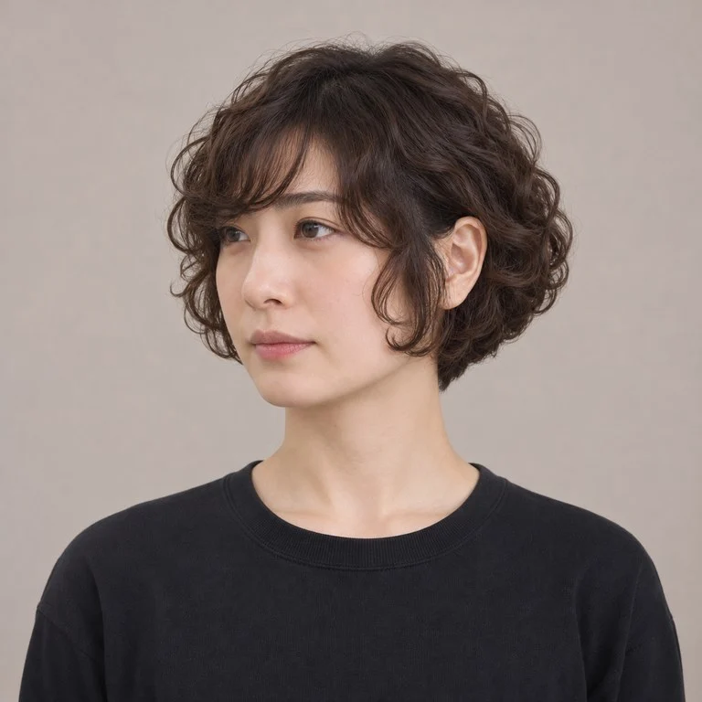
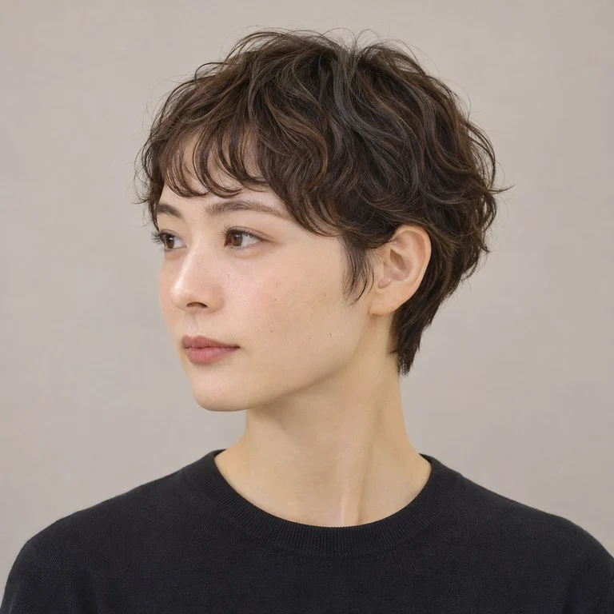
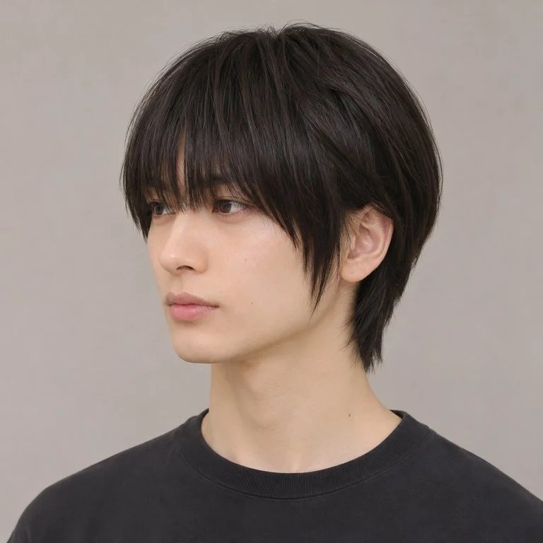
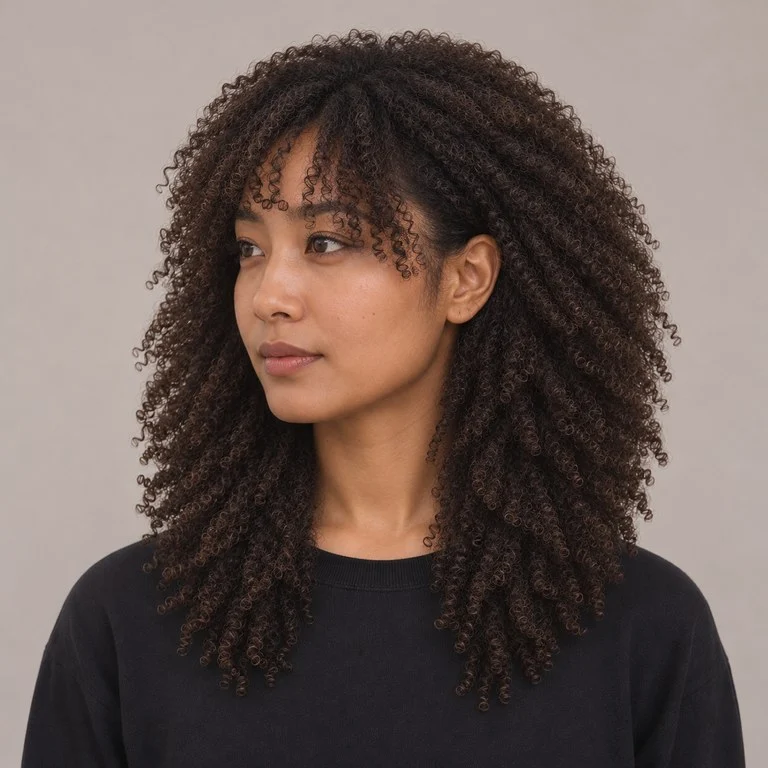
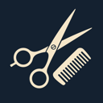

髪型の見本



美容師さんに見せる注文メモ
選んだ見本、トップの長さ、切る量をcmで1画面にまとめます。席に座ったら画面を美容師に見せるだけで注文できます。
見本選びと注文文の作成は無料です。自分の写真で仕上がりを確認したいときは、画像を1枚ずつ購入できます。日本では1回50円です。

カットノート



選んだ見本、トップの長さ、切る量をcmで1画面にまとめます。席に座ったら画面を美容師に見せるだけで注文できます。
見本選びと注文文の作成は無料です。自分の写真で仕上がりを確認したいときは、画像を1枚ずつ購入できます。日本では1回50円です。
このサイトはアクセス解析にGoogle Analyticsを使用しています。Googleによるデータの取り扱い